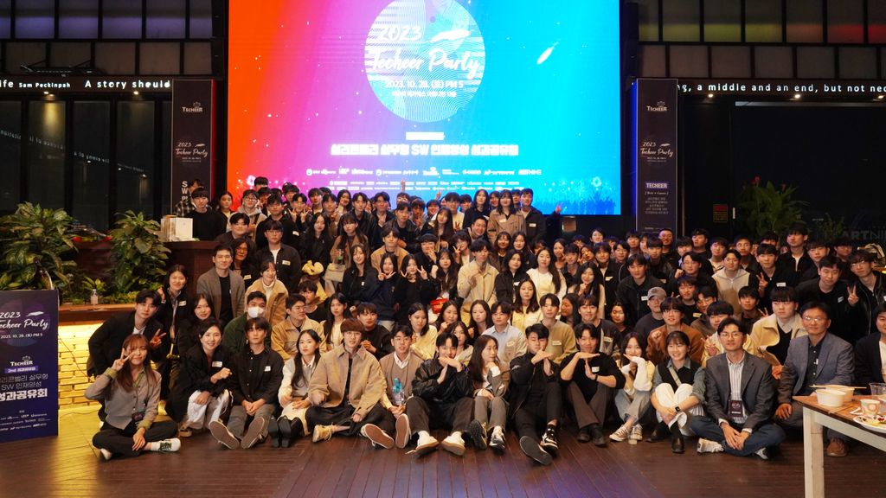

실리콘밸리 운영 방식
기회는 열고 성과는 명확하게 보상하는 시스템으로 자발적 성장을 만듭니다.
테커는 지식 전달보다 경험 설계에 집중합니다. 팀으로 만들고, 발표하고, 피드백 받고, 다시 개선하는 루프가 핵심입니다.
기회는 열고 성과는 명확하게 보상하는 시스템으로 자발적 성장을 만듭니다.
현직 개발자와 선배 멘토가 프로젝트, 커리어, 학습 방향을 함께 점검합니다.
부트캠프 이후에도 프로젝트, 스터디, 기술 세션을 통해 성장 루프를 이어갑니다.
